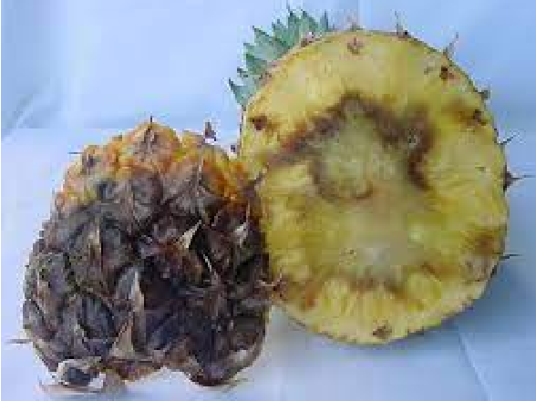
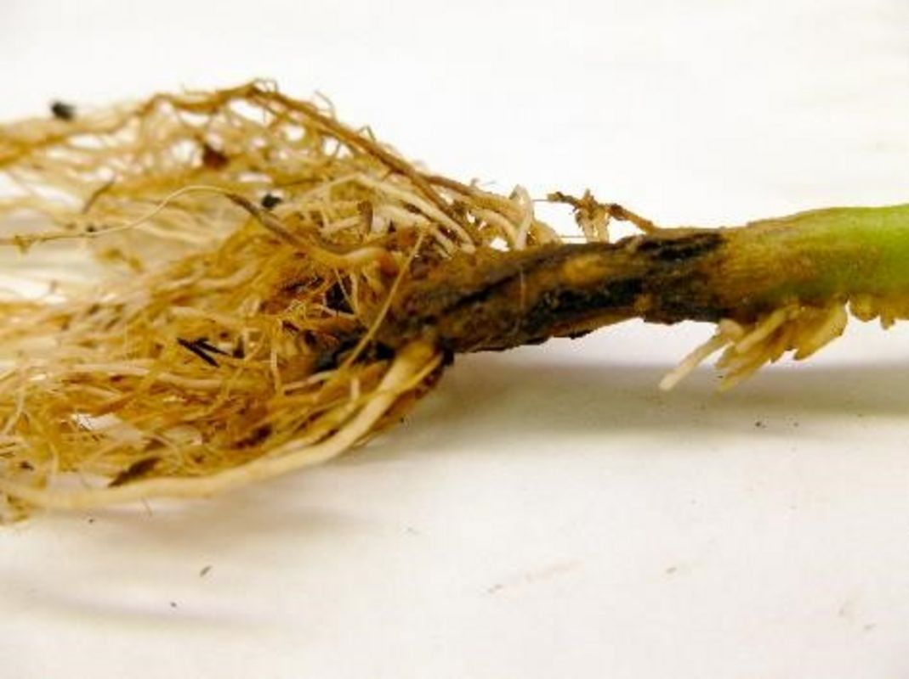
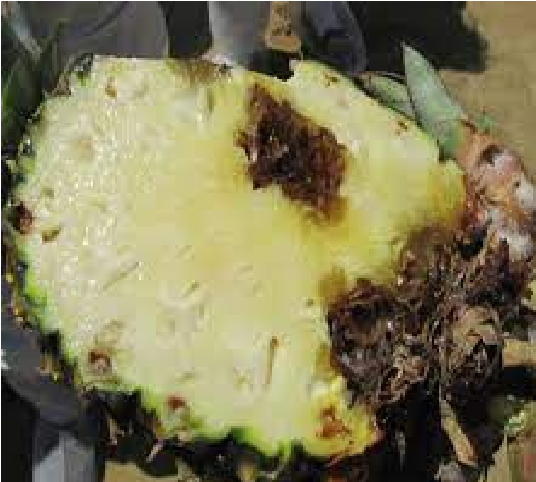

Pudre bacterial de las hojas y el fruto - Erwinia carotovora
Mal Olor. Color cafe en la planta.Ablandamiento. Hojas amarillas. color verde oliva. Tallo que se desarma.
Ver más

Pudre fungoso de tallo y raíz - Phytophthora parasitica
Decoloracion. Hojas rojizas. Pudredumbre del centro. Zonas negras.
Ver más
Pudrición acuosa - Thielaviopsis paradoxa
Manchas blancas en la base del fruto. Color gris. Se puede desarmar el tallo.
Ver más

Fusariosis - Fusarium oxysporum
Perdida del color verde de la planta. Partes negras y secas. Se aprecian las celulas muertas. Deshidratación.
Ver más